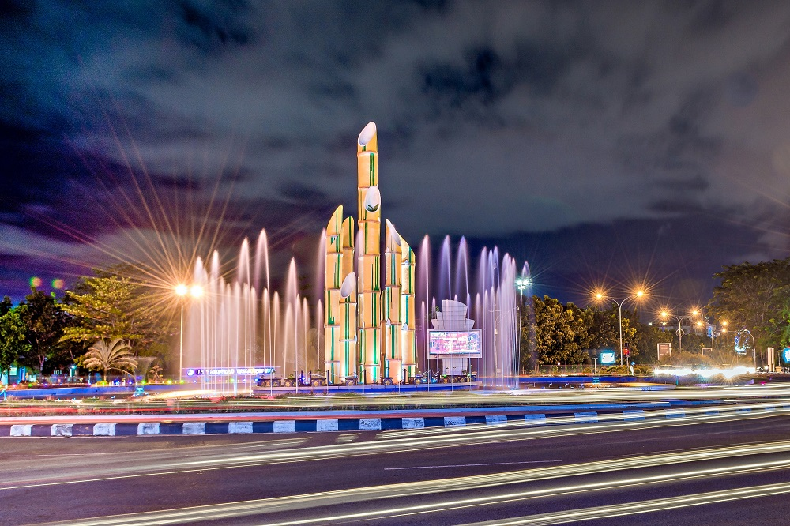
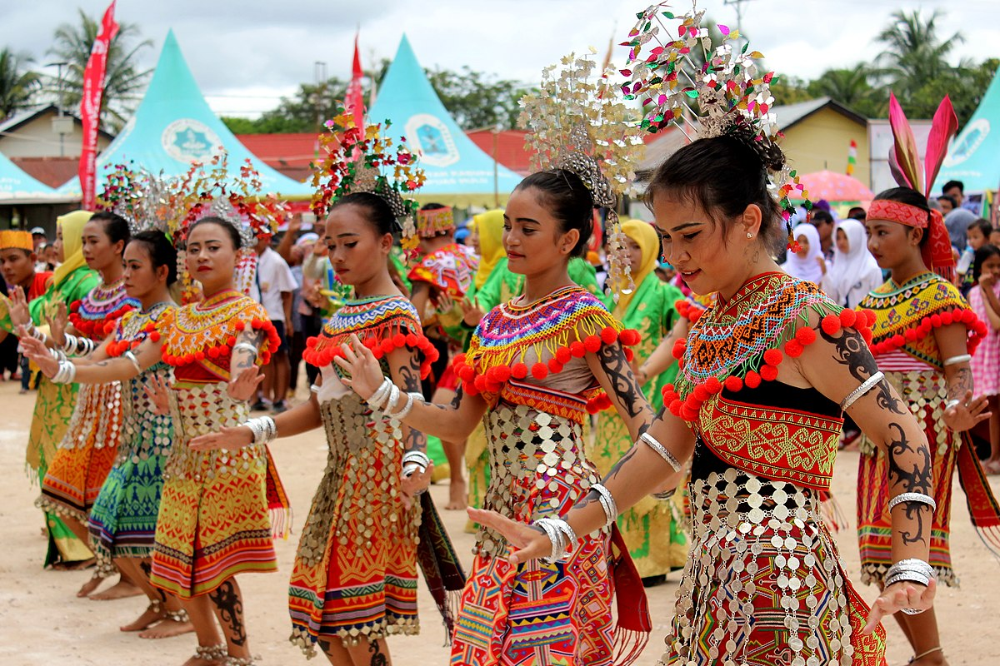
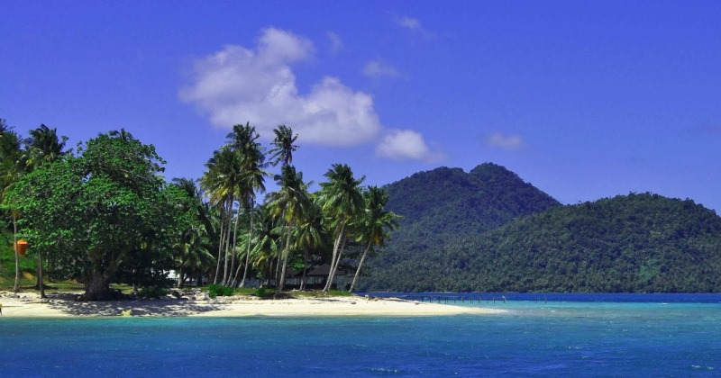
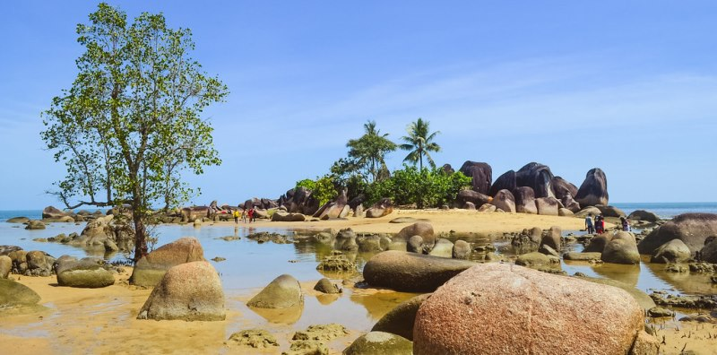
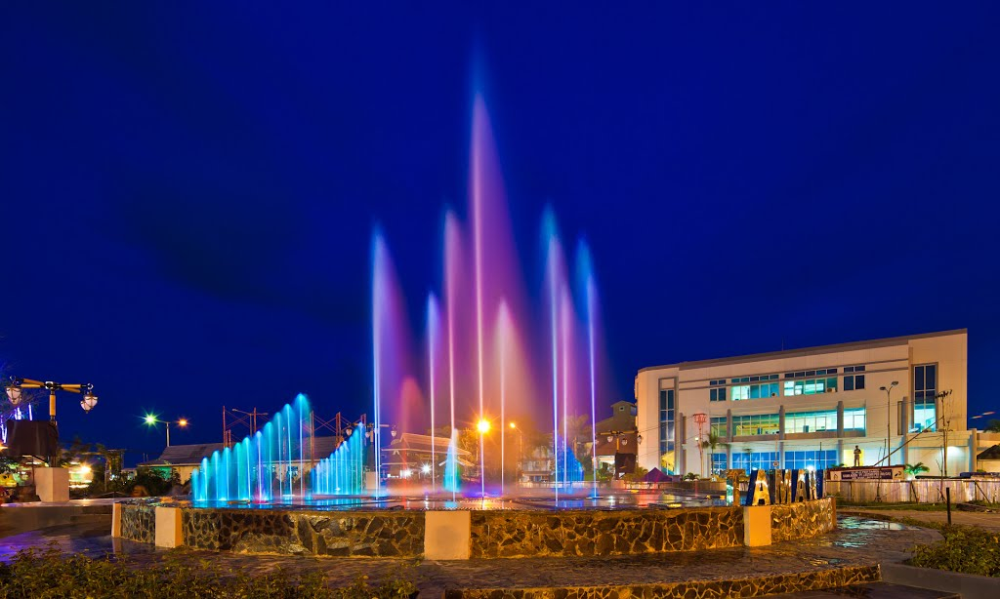

SEJARAH
Bakulapura atau Tanjungpura merupakan taklukan Kerajaan Singhasari. Wilayah kekuasaan Tanjungpura membentang dari Tanjung Dato sampai Tanjung Sambar. Pulau Kalimantan kuno terbagi menjadi 3 wilayah negara kerajaan induk: Borneo (Brunei), Sukadana (Tanjungpura) dan Banjarmasin (Bumi Kencana). Tanjung Dato adalah perbatasan wilayah mandala Borneo (Brunei) dengan wilayah mandala Sukadana (Tanjungpura), sedangkan Tanjung Sambar batas wilayah mandala Sukadana/Tanjungpura dengan wilayah mandala Banjarmasin (daerah Kotawaringin).Daerah aliran Sungai Jelai, di Kotawaringin di bawah kekuasaan Banjarmasin, sedangkan sungai Kendawangan di bawah kekuasaan Sukadana. Perbatasan di pedalaman, perhuluan daerah aliran sungai Pinoh (Lawai) termasuk dalam wilayah Kerajaan Kotawaringin (bawahan Banjarmasin).
Daerah-daerah di Kalbar yang terkenal pada zaman dahulu diantaranya Tanjungpura dan Batang Lawai. Loue (Lawai) oleh Tomé Pires digambarkan daerah yang banyak intan, jarak dari Tanjompure empat hari pelayaran. Tanjungpura maupun Lawai masing-masing dipimpin seorang Patee (Patih). Patih-patih ini tunduk kepada Patee Unus, penguasa Demak.Kesultanan Demak juga telah berjasa membantu raja Banjar Pangeran Samudera berperang melawan pamannya Pangeran Tumenggung penguasa Kerajaan Negara Daha terakhir untuk memperebutkan hegemoni atas wilayah Kalimantan Selatan.
Menurut naskah Hikayat Banjar dan Kotawaringin, negeri Sambas, Sukadana dan negeri-negeri di Batang Lawai (nama kuno sungai Kapuas) pernah menjadi taklukan Kerajaan Banjar atau pernah mengirim upeti sejak zaman Hindu. Kerajaan Banjar menamakan kerajaan-kerajaan di Kalbar ini dengan sebutan negeri-negeri di bawah angin. Kerajaan Banjar memiliki prajurit Dayak Biaju-Ot Danum dan Dayak Dusun-Maanyan-Lawangan yang sering memenggal kapala musuh-musuhnya (ngayau). Pada masa pemerintahan Raja Maruhum Panambahan seorang Adipati Sambas/Panembahan Ratu Sambas telah menghantarkan upeti berupa dua biji intan yang berukuran besar yang bernama Si Giwang dan Si Misim.
Pada tahun 1604 pertama kalinya Belanda berdagang dengan Sukadana.Tahun 1609, di Sambas pada saat itu ada ketakutan yang sangat besar akan serangan bermusuhan oleh Brunei, sehingga penguasa wilayah itu, Saboa Tangan Pangeran ay de Paty Sambas (Pangeran Adipati Sambas), membuat aliansi dengan VOC-Belanda pada 1 Oktober 1609, dengan harapan menentangnya, untuk memperkuat terhadap musuh-musuhnya. Sementara itu serangan itu tidak memiliki tempat; Walaupun, sultan Brunei telah turun ke laut dengan 150 perahu, tetapi badai telah memaksanya untuk mundur.Tahun 1672, Sultan Banjar mengesahkan Raja Sintang sebagai Sultan.
Sesuai perjanjian 20 Oktober 1756 VOC Belanda berjanji akan membantu Sultan Banjar Tamjidullah I untuk menaklukan kembali daerah-daerah yang memisahkan diri diantaranya Sanggau, Sintang dan Lawai (Kabupaten Melawi), sedangkan daerah-daerah lainnya merupakan milik Kesultanan Banten, kecuali Sambas. Menurut akta tanggal 26 Maret 1778 negeri Landak dan Sukadana (sebagian besar Kalbar) diserahkan kepada VOC Belanda oleh Sultan Banten. Inilah wilayah yang mula-mula menjadi milik VOC Belanda selain daerah protektorat Sambas. Pada tahun itu pula Syarif Abdurrahman Alkadrie yang dahulu telah dilantik di Banjarmasin sebagai Pangeran yaitu Pangeran Syarif Abdurrahman Nur Alam direstui oleh VOC Belanda sebagai Sultan Pontianak yang pertama dalam wilayah milik Belanda tersebut.Pada tahun 1789 Sultan Pontianak dibantu Kongsi Lan Fang diperintahkan VOC Belanda untuk menduduki negeri Mempawah dan kemudian menaklukan Sanggau.
Pada tanggal 4 Mei 1826 Sultan Adam dari Banjar menyerahkan Jelai, Sintang dan Lawai (Kabupaten Melawi) kepada pemerintahan kolonial Hindia Belanda. Tahun 1846 daerah koloni Belanda di pulau Kalimantan memperoleh pemerintahan khusus sebagai Dependensi Borneo.Pantai barat Borneo terdiri atas asisten residen Sambas dan asisten residen Pontianak. Divisi Sambas meliputi daerah dari Tanjung Dato sampai muara sungai Doeri. Sedangkan divisi Pontianak yang berada di bawah asisten residen Pontianak meliputi distrik Pontianak, Mempawah, Landak, Kubu, Simpang, Sukadana, Matan, Tayan, Meliau, Sanggau, Sekadau, Sintang, Melawi, Sepapoe, Belitang, Silat, Salimbau, Piassa, Jongkong, Boenoet, Malor, Taman, Ketan, dan Poenan Sebelumnya menurut Staatsblad van Nederlandisch Indië tahun 1849 No. 40, ada 14 daerah (Sambas, Mampawa, Pontianak, Koeboe, Simpang, Soekadana, Matan, Landak, Tajan, Meliou, Sangouw, Sekadouw, Blitang, Sintang) di wilayah ini termasuk dalam wester-afdeeling van Borneo berdasarkan Bêsluit van den Minister van Staat, Gouverneur-Generaal van Nederlandsch-Indie, per tanggal 27 Agustus 1849, No. 8. Pada 1855, negeri Sambas dimasukan ke dalam wilayah Hindia Belanda menjadi Karesidenan Sambas.
Menurut Hikayat Malaysia, Brunei, dan Singapore wilayah yang tidak bisa dikuasai dari kerajaan Hindu sampai kesultanan Islam di Kalimantan Barat adalah kebanyakan dari Kalimantan Barat seperti Negeri Sambas dan sekitarnya, dan menurut Negara Brunei Darussalam Hikayat Banjar adalah palsu dan bukan dibuat dari kesultanan Banjar sendiri melainkan dari tangan-tangan yang ingin merusak nama Kalimantan Barat dan disebarluaskan keseluruh Indonesia sampai saat ini, karena menurut penelitian para ahli psikolog di dunia Negeri Sambas tidak pernah kalah dan takluk dengan Negara manapun.
Pada zaman pemerintahan Hindia Belanda berdasarkan Keputusan Gubernur Jenderal yang dimuat dalam STB 1938 No. 352, antara lain mengatur dan menetapkan bahwa ibu kota wilayah administratif Gouvernement Borneo berkedudukan di Banjarmasin dibagi atas 2 Residentir, salah satu di antaranya adalah Residentie Westerafdeeling Van Borneo dengan ibu kota Pontianak yang dipimpin oleh seorang Residen.
Pada tanggal 1 Januari 1957 Kalimantan Barat resmi menjadi provinsi yang berdiri sendiri di Pulau Kalimantan, berdasarkan Undang-undang Nomor 25 tahun 1956 tanggal 7 Desember 1956. Undang-undang tersebut juga menjadi dasar pembentukan dua provinsi lainnya di pulau terbesar di Nusantara itu. Kedua provinsi itu adalah Kalimantan Selatan dan Kalimantan Timur.
SUKU
Berdasarkan data Sensus Penduduk Indonesia 2010, suku yang dominan di Kalimantan Barat dari 4.385.356 jiwa, yaitu suku Dayak yakni 2.194.009 jiwa (50,03%). Suku Dayak mayoritas di daerah pedalaman seperti Landak, Bengkayang, Sanggau, Sintang, Sekadau dan Melawi. Selanjutnya ada suku Melayu sebanyak 814.550 jiwa (18,57%).[49] Suku Melayu mayoritas di kawasan pesisir, seperti Sambas, Kayong Utara, Ketapang, Mempawah dan Kota Pontianak.
Suku terbanyak ketiga di Kalimantan Barat yaitu suku Jawa sebanyak 427.33 jiwa (9,74%) yang memiliki basis pemukiman di daerah-daerah transmigrasi yang tersebar di seluruh Kabupaten/Kota, terutama Kubu Raya dan Sintang yang sekitar 30% penduduknya merupakan warga transmigran asal Jawa. Di urutan keempat yaitu etnis Tionghoa yakni 358.451 jiwa (8,17%) yang banyak terdapat di perkotaan seperti Singkawang dan Pontianak. Di Kota Singkawang, 37% penduduknya adalah keturunan Tionghoa dan 32% Melayu, sedangkan di Kota Pontianak 32% penduduknya suku Melayu dan 18% Tionghoa. Budaya dasar Kalimantan Barat dibentuk atas tiga tungku utama, yaitu Dayak, Melayu dan Tionghoa.Kedatangan orang Tionghoa ke Kalimantan Barat diyakini terdapat tiga gelombang, yang terbesar saat penemuan emas di Monterado, Bengkayang. Saat itu, Sultan Sambas dan Mempawah mendatangkan orang Tionghoa untuk menjadi tenaga penambang disana.Walau demikian saat ini terdapat banyak suku bangsa dari seluruh Indonesia yang mendiami Kalimantan Barat, dan populasi suku Jawa sudah melebihi keturunan Tionghoa disebabkan banyaknya migrasi dari pulau Jawa, baik melalui transmigrasi maupun masuknya tenaga kerja dari berbagai sektor.
Berikutnya di urutan kelima yaitu etnis Madura (6,27%) yang memiliki basis pemukiman di Mempawah dan Kubu Raya. Berbeda dengan suku Jawa, kedatangan suku Madura ke Kalimantan Barat karena migrasi swakarsa atau dengan biaya sendiri.Di urutan keenam yaitu Bugis (3,13%) yang juga banyak terdapat di Mempawah. Setiap tahun di Mempawah diadakan upacara tradisi Robo'-Robo' untuk memperingati kedatangan Opu Daeng Manambon dari Kesultanan Luwu ke Kerajaan Mempawah.
BAHASA
Bahasa Indonesia merupakan bahasa yang secara umum dipakai oleh masyarakat di Kalimantan Barat. Selain itu bahasa penghubung, yaitu Bahasa Melayu menurut wilayah penyebarannya. Demikian juga terdapat beragam jenis Bahasa Dayak, Menurut penelitian Institut Dayakologi terdapat 188 dialek yang dituturkan oleh suku Dayak dan Bahasa Tionghoa seperti Tiochiu dan Khek/Hakka. Dialek yang di maksudkan terhadap bahasa suku Dayak ini adalah begitu banyaknya kemiripannya dengan bahasa Melayu, hanya kebanyakan berbeda di ujung kata seperti makan (Melayu), makatn (Kanayatn), makai (Iban) dan makot (Melahui).
Khusus untuk rumpun Uud Danum, bahasanya boleh dikatakan berdiri sendiri dan bukan merupakan dialek dari kelompok Dayak lainnya. Dialeknya justru ada pada beberapa sub suku Dayak Uut Danum sendiri. Seperti pada bahasa sub suku Dohoi misalnya, untuk mengatakan makan saja terdiri dari minimal 16 kosakata, mulai dari yang paling halus sampai ke yang paling kasar. Misalnya saja ngolasut (sedang halus), kuman (umum), dekak (untuk yang lebih tua atau dihormati), ngonahuk (kasar), monirak (paling kasar) dan Macuh (untuk arwah orang mati).
Peta bahasa Kemendikbud menyebutkan ada 9 bahasa di Kalimantan Barat, diantaranya Bakatik, Bukat, Galik, Kayaan, Melayu, Punan, Ribun, Taman dan Uud Danum.
- Bakatik
- Bukat
- Galik
- Kayaan
- Punan
- Ribun
- Taman
- Uud Daum
Bahasa Bakatik dituturkan oleh masyarakat terutama di wilayah Kabupaten Bengkayang, tersebar di wilayah Kecamatan Ledo, Sanggau Ledo, Teriak, dan Bengkayang. Sementara itu selain di Kabupaten Bengkayang, bahasa Bakatik juga dituturkan di Kota Pontianak, Kabupaten Sambas, Kabupaten Landak, dan Kabupaten Kubu Raya yang ada di sekitar Kecamatan Sungai Ambawang serta di Kecamatan Simpang Hulu, Kabupaten Ketapang. Bahasa Bakatik terbagi atas 4 (empat) dialek. Pertama dialek Moro Betung dengan daerah sebarannya di Kecamatan Menyuke, Kabupaten Landak. Kedua dialek Ambawang Satu di Kabupaten Kubu Raya. Ketiga Sahan di Kecamatan Sanggau Ledo, Kabupaten Bengkayang. Keempat dialek Rodaya daerah sebarannya di Kecamatan Ledo dan Desa Bani Amas di Kabupaten Bengkayang.
Bahasa Bukat dituturkan oleh masyarakat yang mendiami wilayah di sekitar hulu Sungai Kapuas, terutama di wilayah Kecamatan Putussibau, Kecamatan Putussibau Utara dan Desa Tanjung Jati, Kecamatan Putussibau Selatan, Kabupaten Kapuas Hulu. Bahasa Bukat termasuk kelompok minoritas di Kalimantan Barat dan dapat dikatakan bahwa bahasa Bukat merupakan sebuah bahasa tersendiri di Kalimantan Barat.
Bahasa Galik (Golik) dituturkan oleh masyarakat di Kampung Mandong, Kampung Tayan Hulu dan Kampung Engkahan, Kecamatan Sekayam; di Kampung Kasro Mego, Kecamatan Beduwai; dan Kampung Tanap, Kecamatan Kembayan, Kabupaten Sanggau, Provinsi Kalimantan Barat. Bahasa Galik (Golik) terdiri atas empat dialek.Pertama dialek Mandong yang dituturkan di Kampung Mandong, Penutur menamakan bahasanya dengan bahasa Dayak Peruan. Kedua dialek Engkahan yang dituturkan di daerah Kecamatan Sekayam, penuturnya menamakan bahasa Dayak Karamai. Ketiga dialek Kasro Mego yang dituturkan di Desa Kasro Mego di Kecamatan Beduai, penuturnya menamakan bahasa Galik. Keempat dialek Tanap yang dituturkan di Desa Tanap, penuturnya menamakan bahasa Tanap.
Bahasa Kayaan dituturkan di wilayah Putussibau, Kabupaten Kapuas Hulu, Kalimantan Barat, di wilayah hulu Sungai Kapuas. Berdasarkan hasil penghitungan dialektometri, isolek Kayaan merupakan sebuah bahasa tersendiri.jika dibandingkan dengan bahasa-bahasa lain di Kalimantan Barat.
Bahasa Punan antara lain dituturkan oleh masyarakat di Desa Tanjunglokang, Kecamatan Putussibau Selatan, Kabupaten Kapuas Hulu.
Bahasa Ribun (Rihun) dituturkan oleh masyarakat di Desa Tanggung dan Desa Semirau, Kecamatan Jangkang; di Desa Gunam, Kecamatan Parindu; di Desa Empodis dan Desa Upe, Kecamatan Bonti; dan di Desa Semongan, Kecamatan Noyan. Daerah-daerah tersebut berada di Kabupaten Sanggau.
Bahasa Taman dituturkan oleh masyarakat di wilayah hulu Sungai Kapuas, antara lain di Engko’ Tambe, Kecamatan Putussibau Selatan; di Desa Pulau Manak, Kecamatan Embaloh Hulu; di Mensiau, Kecamatan Batang Lupar; di Nanga Tuwuk, Sungai Tempurau, Kecamatan Putussibau, Kabupaten Kapuas, Provinsi Kalimantan Barat. Wilayah tutur bahasa Taman dikelilingi oleh wilayah tutur bahasa Melayu. Bahasa Taman tersebar di wilayah Kabupaten Kapuas Hulu, yaitu di wilayah Kecamatan Putussibau, Mandai, dan Batang Lupar. Bahasa Taman mempunyai tiga dialek. Pertama dialek Taman Kapuas,yang memiliki daerah sebaran di Ingko’ Tambe, Kecamatan Putussibau. Kedua dialek Taman Embaloh, yang memiliki daerah sebaran di Pulau Manak, Kecamatan Embaloh Hulu dan Mensiau di Kecamatan Batang Lupar. Ketiga dialek Kalis, yang memiliki daerah sebaran di Nanga Tuwuk, Sungai Tempurau, Kecamatan Putussibau.
Bahasa Uud Danum (Ot Danum) dituturkan oleh masyarakat di Desa Nanga Keremoi, Kecamatan Ambalau, Kabupaten Sintang, di daerah hulu Sungai Melawi, Provinsi Kalimantan Barat.
BUDAYA
Tarian Tradisional
Tari Monong/Manang/Baliatn, merupakan tari penyembuhan yang terdapat pada seluruh masyarakat Dayak. Tari ini berfungsi sebagai penolak/penyembuh/penangkal penyakit agar si penderita dapat sembuh kembali penari berlaku seperti dukun dengan jampi-jampi. Tarian ini hadir di saat sang dukun sedang dalam keadaan trance, dan tarian ini merupakan bagian dari upacara adat Bemanang/Balian.
Tari Pingan merupakan tarian tunggal pada masyarakat Dayak Mualang Kabupaten Sekadau di masa lalunya sebagai tarian upacara dan pada masa kini sebagai tari hiburan masyarakat atas rezeki/tuah/makanan yang diberikan oleh Tuhan. Tari ini menggunakan Pingan sebagai media atraksi dan tari ini berangkat dari kebudayaan leluhur pada masa lalu yang berkaitan erat dengan ritualisme legitimasi kelulusan beladiri tradisional Dayak Mualang (Ibanik Group).
Tari Pedang / Ajat Pedang, merupakan tarian tunggal terdapat pada Dayak Mualang, tarian ini menceritakan persiapan membela diri bagi seorang pemuda yang akan turun melakukan ekspedisi Mengayau. penari melakukan gerakan-gerakan menyerang dan menangkis menggunakan keahlian tradisionalnya. tarian ini masa lalunya dimulai dengan ritual memuja pedang ( Nyabor bahasa Mualang) dan tarian ini diiringi dengan instrumen musik disebut Tebah Unop. tersebar di kampung Merbang dan sekitarnya kecamatan Belitang Hilir dan belitang hulu kampung sebetung.
Tari Jonggan, merupakan tari pergaulan masyarakat Dayak Kanayatn di daerah Kubu Raya ( Ambawakng), Mempawah ( Toho, Manyalitn), Landak ( Sahapm) yang masih dapat ditemukan dan dinikmati secara visual, tarian ini meceritakan suka cita dan kebahagiaan dalam pergaulan muda mudi Dayak. Dalam tarian ini para tamu yang datang pada umumnya diajak untuk menari bersama.
Tari kondan merupakan tari pergaulan yang diiringi oleh pantun dan musik tradisional masyarakat Dayak Kabupaten Sanggau Kapuas, kadang kala kesenian kondan ini diiringi oleh gitar. kesenian kondan ini adalah ucapan kebahagiaan terhadap tamu yang berkunjung dan bermalam di daerahnya. kesenian ini dilakukan dengan cara menari dan berbalas pantun.
Kinyah Uut Danum, adalah tarian perang khas kelompok suku Dayak Uut Danum yang memperlihatkan kelincahan dan kewaspadaan dalam menghadapi musuh. Dewasa ini Kinyah Uut Danum ini banyak diperlihatkan pada acara acara khusus atau sewaktu menyambut tamu yang berkunjung. Tarian ini sangat susah dipelajari karena selain menggunakan Ahpang (Mandau) yang asli, juga karena gerakannya yang sangat dinamis, sehingga orang yang fisiknya kurang prima akan cepat kelelahan.
Tari Zapin pada masyarakat Melayu Kalimantan Barat, Zapin merupakan tarian Masyarakat Melayu Nusantara diadofsi dari timur tengah yaitu Hadramaut, selanjutnya menyebar ke Riau seterusnya ke Kalbar. Merupakan suatu tari pergaulan dalam masyarakat, sebagai media ungkap kebahagiaan dalam pergaulan. Jika ia menggunakan properti Tembung maka disebut Zapin tembung, jika menggunakan kipas maka di sebut Zapin Kipas.
Tari Menoreh Getah adalah tarian yang menggambarkan kegiatan sehari-hari masyarakat pedesaan Kalimantan Barat. Tari Mandau, merupakan wujud semangat juang para pemuda suku dayak untuk membela hukum dan martabatnya.
Alat Musik Tradisional
- Gong/Agukng, Kollatung (Uut Danum) merupakan alat musik pukul yang terbuat dari kuningan, merupakan alat musik yang multifungsi baik sebagai maskawin, sebagai dudukan simbol semangat dalam pernikahan. maupun sebagai bahan pembayaran dalam hukum adat.
- Gambus, alat musik petik khas suku Melayu yang mendapat pengaruh dari arab.
- Tawaq (sejenis Kempul) merupakan alat musik untuk mengiringi tarian tradisional masyarakat Dayak secara umum. Bahasa Dayak Uut Danum menyebutnya Kotavak.
- Hadrah, alat musik khas suku Melayu yang berbentuk seperti gendang tapi memiliki gerincing-gerincing di sekelilingnya.
- Sapek merupakan alat musik petik tradisional dari Kapuas hulu dikalangan masyarakat Dayak Kayaan Mendalam kabupaten Kapuas hulu. Pada masyarakat Uut Danum menyebutnya Konyahpik (bentuknya) agak berbeda sedikit dengan Sapek.
- Balikan/Kurating merupakan alat musik petik sejenis Sapek, berasal dari Kapuas Hulu pada masyarakat Dayak Ibanik, Dayak Banuaka".
- Kangkuang merupakan alat musik pukul yang terbuat dari kayu dan berukir, terdapat pada masyarakat Dayak Banuaka Kapuas Hulu.
- Keledik/Kedire merupakan alat musik terbuat dari labu dan bilah bambu di mainkan dengan cara ditiup dan dihisap, terdapat di daerah Kapuas Hulu. Pada suku Dayak Uut Danum di sebut Korondek. Entebong merupakan alat musik Pukul sejenis Gendang yang banyak terdapat di kelompok Dayak Mualang di daerah Kabupaten Sekadau.
- Rebab, yaitu alat musik gesek, terdapat pada suku Melayu penggunaannya mirip dengan biola.
- Kohotong, yaitu alat musik tiup, terbuat dari dahan semacam pelepah tanaman liar di hutan seperti pohon enau.
- Sollokanong (beberapa suku Dayak lain menyebutnya Klenang) terbuat dari kuningan, bentuknya lebih kecil dari gong, penggunaannya harus satu set.
- Terah Umat (pada Dayak Uut Danum) merupakan alat musik ketuk seperti pada gamelan Jawa. Alat ini terbuat dari besi (umat) maka di sebut Terah Umat.
Senjata Tradisional
- Mandau (Ahpang: sebutan Uut Danum) adalah sejenis Pedang yang memiliki keunikan tersendiri, dengan ukiran dan kekhasannya. Pada suku Dayak Uut Danum hulunya terbuat dari tanduk rusa yang diukir, sementara besi bahan Ahpang (Mandau) terbuat dari besi yang ditambang sendiri dan terdiri dari dua jenis, yaitu Bahtuk Nyan yang terkenal keras dan tajam sehingga lalat hinggap pun bisa putus tetapi mudah patah dan Umat Motihke yang terkenal lentur, beracun dan tidak berkarat.
- Tumbak
- Keris Melayu
- Sumpit (Sohpot: sebutan Uut Danum)
- Senapang Lantak ( senjata Tradisional )
- Duhung (Uut Danum)
- Isou Bacou atau Parang yang kedua sisinya tajam (Uut Danum)
- Lunjuk atau sejenis tumbak untuk berburu (Uut Danum)
- Mandau ( sejenis pedang namun berukir pada besi dan ganggang, bilah besi berbentuk cembung sebelah.
- Nyabor ( sejenis mandau namun melentik ke atas bilah besinya memiliki ketajaman yang sama )
Sastra lisan
Beberapa sastra lisan yang ada di daerah ini antara lain :
- Bekana merupakan cerita orang tua masa lalu yang menceritakan dunia khayangan atau Orang Menua Pangau (dewa-dewi) dalam mitologi Dayak Ibanik: Iban, Mualang, Kantuk, Desa dan lain-lain.
- Bejandeh merupakan sejenis bekana tetapi objek ceritanya beda.
- Nyangahatn, yaitu doa tua pada masyarakat Dayak Kanayatn.
- Pantun Jepin yaitu syair-syair atau gurindam yang dilantunkan pada acara adat suku Melayu.
Pada suku Dayak Uut Danum, sastra lisannya terdiri dari Kollimoi (zaman kedua), Tahtum (zaman ketiga), Parung, Kandan dan Kendau. Pada zaman tertua atau pertama adalah kejadian alam semesta dan umat manusia. Pada sastra lisan zaman kedua ini adalah tentang kehidupan manusia Uut Danum di langit. Pada zaman ketiga adalah tentang cerita kepahlawanan dan pengayauan suku dayak Uut Danum ketika sudah berada di bumi, misalnya bagaimana mereka mengayau sepanjang sungai Kapuas sampai penduduknya tidak tersisa sehingga dinamakan Kopuas Buhang (Kapuas yang kosong atau penghuninya habis) lalu mereka mencari sasaran ke bagian lain pulau Kalimantan yaitu ke arah kalimantan Tengah dan Timur dan membawa nama-nama daerah di Kalimantan Barat, sehingga itulah mengapa di Kalimantan Tengah juga ada sungai bernama sungai Kapuas dan Sungai Melawi.
Tahtum ini jika dilantunkan sesuai aslinya bisa mencapai belasan malam untuk satu episode, sementara Tahtum ini terdiri dari ratusan episode. Parung adalahsastra lisan sewaktu ada pesta adat atau perkawinan. Kandan adalah bahasa bersastra paling tinggi dikalangan kelompok suku Uut Danum (Dohoi, Soravai, Pangin, Siang, Murung dan lain-lain)yang biasa digunakan untuk menceritakan Kolimoi, Parung, Mohpash dan lain-lain. Orang yang mempelajari bahasa Kandan ini harus membayar kepada gurunya. Sekarang bahasa ini sudah hampir punah dan hanya dikuasai oleh orang-orang tua. Sementara Kendau adalah bahasa sastra untuk mengolok-olok atau bergurau.
Tenun
Kain Tenun Tradisional terdapat di beberapa daerah, di antaranya :
- Tenun Daerah Songket Sambas, kain tenun tersebut biasa disebut Kain Lunggi atau Kain benang Emas, di sebut demikian karena salah satu bahan yang di pergunakan adalah benang emas yang berwarna kuning emas. Kain tenun ini telah ada sejak kesultanan Sambas pada tahun 1675 yang mmeerintah kesultanan Sambas selama 10 tahun
- Tenun Belitang daerah Kumpang Ilong Kabupaten Sekadau ( Dayak Mualang / Ibanik )
- Tenun Ensaid Panjang Kabupaten Sintang ( Dayak Desa / Ibanik)
- Tenun Kapuas Hulu ( Iban dan Kantuk / Kelompok Ibanik )
- Sulam Kalengkang khas suku Melayu Kabupaten Sanggau,
Kerajinan Anyam Manik
Anyam Manik kelompok Dayak Banuaka Group: anyam baju adat Dayak Taman, tamambaloh, peniung, Kalis ( baju Manik dan baju Burik)
Kerajinan Anyam Rotan atau bambu
Bakul, keranjang, Kelayak, Tudung Saji, ambinan, dsb. tersebar di Pontianak, Landak, Sanggau, Sekadau, Sintang, Kapuas hulu.
Kerajinan Tangan
Berbagai macam kerajinan tangan dapat diperoleh dari daerah ini, misalnya :
- Tikar Lampit, di Pontianak dan daerah Bengkayang, Sintang, Kapuas Hulu, Ketapang.
- Bidai ( bahasa Ibanik ) atau bide (bahasa Kanayatn Group) tersebar hampir disebagian suku Dayak baik di Indonesia maupun di Serawak, bidai merupakan tikar tradisional Dayak, terdapat di Bengkayang, Sekadau, Kapuas Hulu, Serawak ( pada komunitas Dayak Iban)
- Ukir-ukiran, perisai, mandau dan lain-lain terdapat di Pontianak dan Kapuas Hulu.
- Kacang Uwoi (tikar rotan bermotif) khas suku Dayak Uut Danum.
- Takui Darok (caping lebar bermotif) khas suku Dayak Uut Danum.
Kue Tradisional
Kue-kue tradisional banyak dijumpai di tempat ini, misalnya :
- Lemang, terbuat dari pulut di masukan ke dalam bambu, merupakan makanan tradisional masyarakat masa lampau yang kini masih dilestarikan.
- Lemper, terbuat dari pulut yang di isi daging/kacang terdapat didaerah Purun merupakan makanan tradisional
- Lepat, terbuat dari tepung yang di dalamnya di masukan pisang.
- Jimut, kue tradisional pada masyarakat Dayak Mualang daerah Belitang Kabupaten Sekadau yang terbuat dari tepung yang dibentuk bulatan sebesar bola pimpong.
- Lulun, sejenis lepat, yamg isimya gula merah, terdapat di daerah Belitang kab sekadau
- Lempok, Dodol yang dibuat dari Durian
- Tumpi', terdapat pada masyarakat Dayak kanayatn, yang terbuat dari bahan tepung.
- Tehpung, kue tradisional pada dayak Uut Danum, terbuat dari beras pulut yang ditumbuk halus dan digoreng. Kue ini biasanya di buat pada acara adat, bentuknya ada yang seperti perahu, gong dan lain-lain.
- kue lapis berbagai macam serta kue keranjang dari tionghoa
Masakan dan makanan Tradisional
Kuliner yang bisa kita dapatkan dari daerah ini adalah :
- Masakan Asam Pedas di daerah Pontianak
- Masakan Bubur Pedas di daerah Sambas
- Kerupok basah, merupakan makanan khas Kapuas Hulu
- Ale-ale, merupakan makanan khas Ketapang
- Pansoh, yaitu masakan daging di dalam bambu pada masyarakat Dayak.
- Mie Tiaw/kwetiau, merupakan masakan khas Tionghoa Pontianak yang terdapat di kota Pontianak
- Nasi Ayam dan Mie Pangsit, merupakan masakan khas penduduk Tionghoa Singkawang dan sekitarnya
- Sungkui, merupakan masakan khas Melayu Kabupaten Sanggau.
- Lek Tau Suan, Makanan Tionghoa Khas Pontianak
WISATA ALAM KALIMANTAN BARAT
Sumber Artikel By : https://kalbar.inews.id

Tanjung Bajau
Ini merupakan salah satu wisata populer dan wajib untuk dikunjungi. Lokasinya berada di Kota Singkawang. Tanjung Bajau menghadirkan konsep wisata alam segar dan alami dengan gabungan antara pantai dan pegunungan.

Riam Madi
Tempat ini merupakan sungai yang berlokasi di Kabupaten Bengkayang. Para wisatawan menjuluki tempat ini adalah sumber mata air yang sangat penting untuk masyarakat. Untuk harga masuk pun cukup murah dan tidak memakan biaya.

Pasir Panjang Singkawang
Kota Wisata merupakan julukan bagi kota Singkawang. Tempat ini berada di daerah Singkawang, satu di antaranya yaitu Pasir Panjang Singkawang. Tempat wisata ini memang sudah banyak dikenal di Kalimantan Barat. Banyak juga turis-turis yang berdatangan di pantai ini. Sejak dulu hingga sekarang tempat ini sangat dinikmati oleh pengunjung karena letaknya strategis dan memiliki daya tarik tersendiri.
Lemukutan Bengkayang
Pulau ini sering dikunjungi oleh wisatawan lokal maupun luar Kalimantan. Pulau ini tidak jauh dari Kota Singkawang yakni sekitar 1 sampai 2 jam jarak yang harus ditempuh melalui perahu motor.
Temajuk Sambas
Nama Temajuk mungkin masih sangat asing bagi traveler di Indonesia. Desa kecil yang terletak persis di ekor pulau Kalimantan ini mempunyai destinasi wisata kelas dunia. Bagi masyarakat di sana, nama Temajuk seolah-olah menjadi magnet wisata. Primadona andalan Kabupaten Sambas ini, bahkan tidak pernah putus kunjungan wisatawan baik lokal maupun negara tetangga Malaysia.

Danau Sentarum
Taman Nasional Danau sentarung di Kabupaten Kapuas Hulu ini sudah tidak diragukan lagi keindahannya. Danau ini memiliki luas sekitar 132.000 hektare. Danau ini juga dapat menampung aliran banjir di seluruh Kalimantan Barat.

Bukit Kelam
Bukit Kelam lebih tepatnya berada di Kecamatan Kelam Permai 20 km dari Kota Sintang, atau sekitar 390 km dari Pontianak. Tempat ini terletak di antara 2 sungai besar yaitu Sungai Melawi dan Sungai Kapuas. Bukit Kelam ini merupakan batu yang terbentang dari timur ke barat.

Hutan Mangrove
Waktu kita duduk di bangku sekolah, pasti pernah mendengar hutan tanaman yang mampu mencegah erosi dan abrasi pantai. Hutan Mangrove memiliki akar efisien dalam melindungi di wilayah pesisir, sehingga dapat menjadi pelindung pengikisan tanah akibat air. Di Sumpawa terdapat tanaman konservasi mangrove yaitu Mempawah Mangrove Park.
Taman Alun-alun Kota Pontianak
Nama Alun Kapuas merupakan satu di antara lokasi wisata taman di kota Pontianak. Letaknya sudah berada di tempat strategis yaitu di tengah Kota Pontianak. Menjadikan taman ini ramai dikunjungi oleh masyarakat setempat. Jam buka tempat ini mulai dari pukul 06.00 WIB - 20.00 WIB

Riam Bedawan
Tempat ini berada di Desa Dange Aji Kecamatan Air Besar, Kabupaten Landak, Kalimantan Barat. Air Terjun Bedawat biasa juga disebut dengan air terjun Bedawat ini memiliki 7 tingkatan yang begitu indah. Suasana hutan tropis dan udara sejuk akan membuat nyaman wisatawan saat berada di sana.